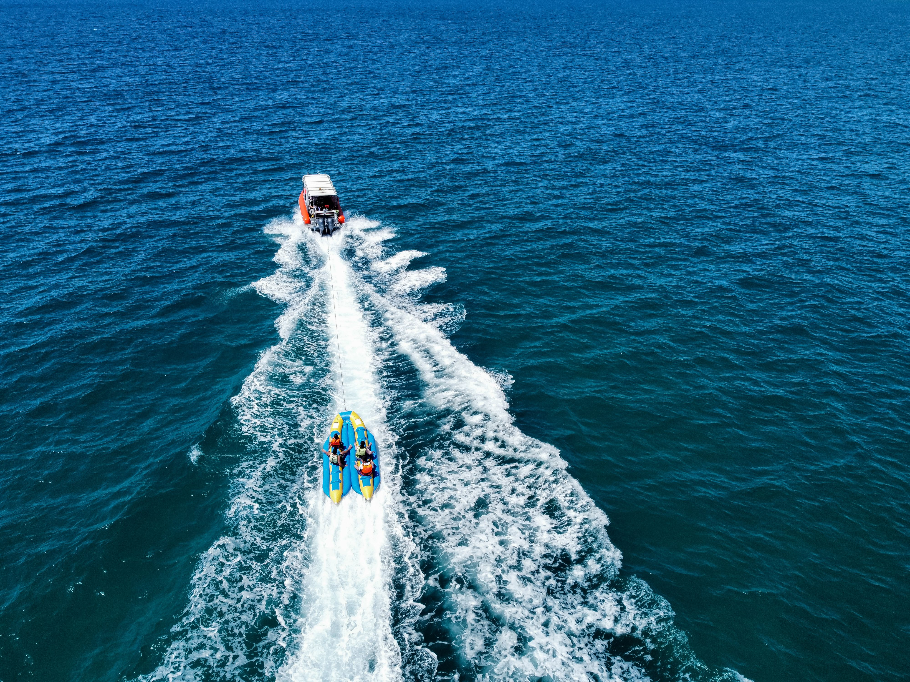
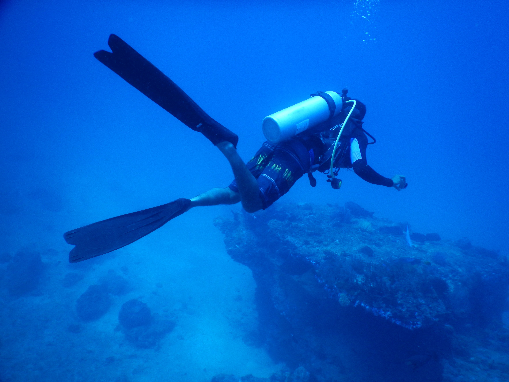

Roatan Activities

Many visitors in Roatan arrive to the island only for a day and they are already on a cruise ship, most of the activities on Roatan can be done in one day. And if you plan it well, you may be able to do many activities in just one day.
Scuba Diving

Its one of the most popular activities on Roatan, with numerous dive sites offering the Mesoamerican Barrier Reef, vibrant coral reefs, and diverse marine life.
French Key

French Key is a small island located off the coast of Roatan, known for its beautiful beaches and crystal-clear waters. It has small zoos, a pristine beach, and a nice diving platform.
Sloths Tour

Take a guided tour to see the adorable sloths in their natural habitat. Learn about their behavior and conservation efforts. i didn't know they had Sloths here I honestly never saw them in my stay.